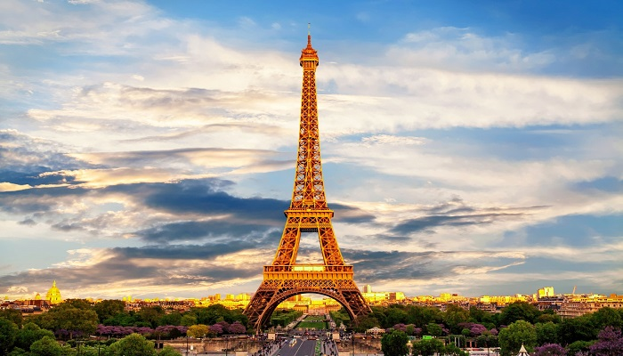

Paris is the capital and most populous city of France, with an estimated population of 2,175,601 residents as of 2018, in an area of more than 105 square kilometres. Since the 17th century, Paris has been one of Europe's major centres of finance, diplomacy, commerce, fashion, gastronomy, science, and arts. The City of Paris is the centre and seat of government of the region and province of Île-de-France, or Paris Region, which has an estimated population of 12,174,880, or about 18 percent of the population of France as of 2017. The Paris Region had a GDP of €709 billion in 2017. According to the Economist Intelligence Unit Worldwide Cost of Living Survey in 2018, Paris was the second most expensive city in the world, after Singapore and ahead of Zürich, Hong Kong, Oslo, and Geneva. Another source ranked Paris as most expensive, on par with Singapore and Hong Kong, in 2018.
Paris is a major railway, highway, and air-transport hub served by two international airports: Paris–Charles de Gaulle (the second-busiest airport in Europe) and Paris–Orly. Opened in 1900, the city's subway system, the Paris Métro, serves 5.23 million passengers daily; it is the second-busiest metro system in Europe after the Moscow Metro. Gare du Nord is the 24th-busiest railway station in the world, but the busiest located outside Japan, with 262 million passengers in 2015. Paris is especially known for its museums and architectural landmarks: the Louvre remained the most-visited museum in the world with 2,677,504 visitors in 2020, despite the long museum closings caused by the COVID-19 virus. The Musée d'Orsay, Musée Marmottan Monet and Musée de l'Orangerie are noted for their collections of French Impressionist art. The Pompidou Centre Musée National d'Art Moderne has the largest collection of modern and contemporary art in Europe. The Musée Rodin and Musée Picasso exhibit the works of two noted Parisians. The historical district along the Seine in the city centre has been classified as a UNESCO World Heritage Site since 1991; popular landmarks there include the Cathedral of Notre Dame de Paris on the Île de la Cité, now closed for renovation after the 15 April 2019 fire. Other popular tourist sites include the Gothic royal chapel of Sainte-Chapelle, also on the Île de la Cité; the Eiffel Tower, constructed for the Paris Universal Exposition of 1889; the Grand Palais and Petit Palais, built for the Paris Universal Exposition of 1900; the Arc de Triomphe on the Champs-Élysées, and the hill of Montmartre with its artistic history and its Basilica of Sacré-Coeur.
